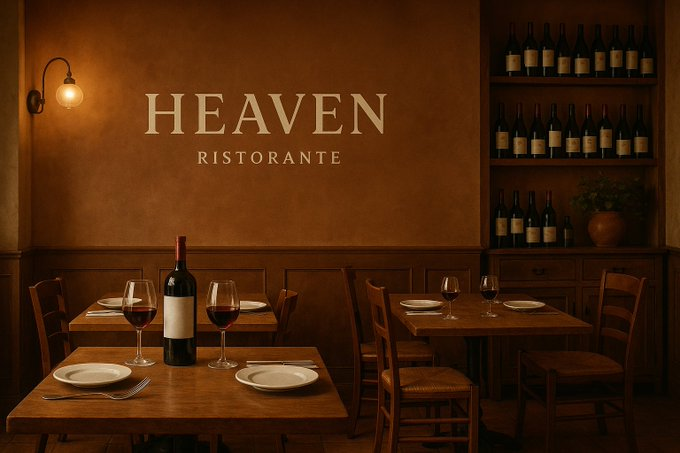
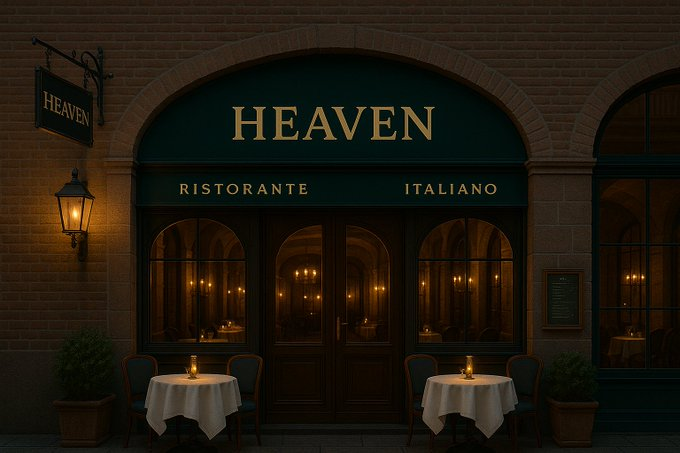
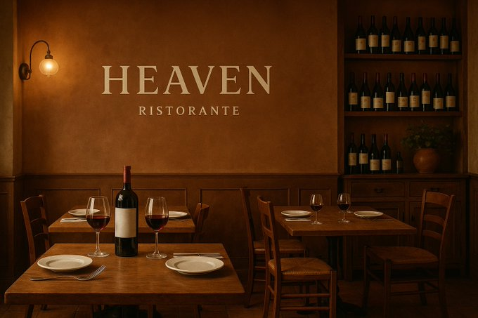
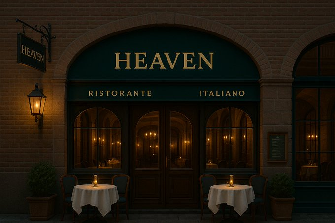

~ようこそ、Heavenへ~
落ち着いた空間で、豪華な本場のイタリアンとデザートを楽しめる店です。
Heaven - 至高のイタリアン体験をあなたに
ようこそ、Heavenへ。
都会の喧騒から離れ、まるで天国のような穏やかな空間で、心と舌を満たす至高のイタリア料理をご堪能ください。
上質な空間
白を基調とした洗練されたインテリアに、ゴールドやクリスタルの繊細な装飾を施し、優雅で落ち着いた雰囲気を演出。柔らかな照明とキャンドルの灯りが特別なひとときを彩ります。窓越しに望む夜景や、季節ごとに表情を変えるガーデンテラスも魅力の一つです。
厳選された食材
イタリア各地から取り寄せた旬の食材と伝統の技が織りなす、本格的なイタリアン。手打ちパスタや石窯で焼き上げるナポリピッツァは、素材の味を最大限に引き出します。ワインソムリエが厳選した希少なワインとのペアリングもお楽しみいただけます。
心を込めたサービス
完全予約制のプライベート空間で、細やかな気配りと温かいホスピタリティをご提供。記念日や特別な日のご利用にも最適です。シェフやソムリエとの会話を楽しめるカウンター席もございます。
特別なひとときを
誕生日や記念日にはオリジナルデザートプレートや花束のサービスをご用意。定期的に開催されるイタリア音楽の生演奏やワインテイスティングイベントで、五感すべてでイタリア文化をご堪能ください。
Heavenで過ごす時間が、あなたにとって最高の“天国の味わい”となりますように。
Heaven - 至高のイタリアン体験をあなたに
ようこそ、Heavenへ。
都会の喧騒から離れ、まるで天国のような穏やかな空間で、心と舌を満たす至高のイタリア料理をご堪能ください。
上質な空間
白を基調とした洗練されたインテリアに、ゴールドやクリスタルの繊細な装飾を施し、優雅で落ち着いた雰囲気を演出。柔らかな照明とキャンドルの灯りが特別なひとときを彩ります。窓越しに望む夜景や、季節ごとに表情を変えるガーデンテラスも魅力の一つです。
厳選された食材
イタリア各地から取り寄せた旬の食材と伝統の技が織りなす、本格的なイタリアン。手打ちパスタや石窯で焼き上げるナポリピッツァは、素材の味を最大限に引き出します。ワインソムリエが厳選した希少なワインとのペアリングもお楽しみいただけます。
心を込めたサービス
完全予約制のプライベート空間で、細やかな気配りと温かいホスピタリティをご提供。記念日や特別な日のご利用にも最適です。シェフやソムリエとの会話を楽しめるカウンター席もございます。
特別なひとときを
誕生日や記念日にはオリジナルデザートプレートや花束のサービスをご用意。定期的に開催されるイタリア音楽の生演奏やワインテイスティングイベントで、五感すべてでイタリア文化をご堪能ください。
Heavenで過ごす時間が、あなたにとって最高の“天国の味わい”となりますように。
営業時間
営業時間（昼・夜の2部制）
- ランチ 12:00 〜 15:00（ラストオーダー14:00）
- ディナー 18:00 〜 23:00（ラストオーダー21:30）
- 定休日：月曜日
営業時間（予約優先のディナー中心）
- ディナー 17:30 〜 22:30（完全予約制・最終入店20:30）
- ランチ営業は不定期で特別イベント時のみ開催
- 定休日：火曜日
営業時間例（季節により変動あり）
- ランチ 11:30 〜 14:30（ラストオーダー14:00）
- ディナー 17:30 〜 22:00（ラストオーダー21:00）
- ※夏季はガーデンテラス席営業 〜23:00まで延長可能
- 定休日：毎週水曜日
アクセス
所在地
東京都新宿区夢ケ丘３丁目12－８
Heavenタワー 1F